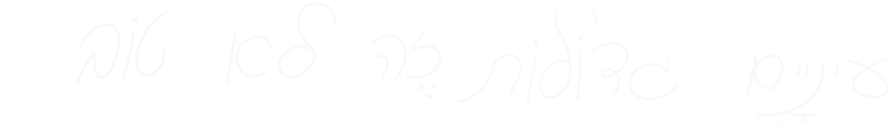
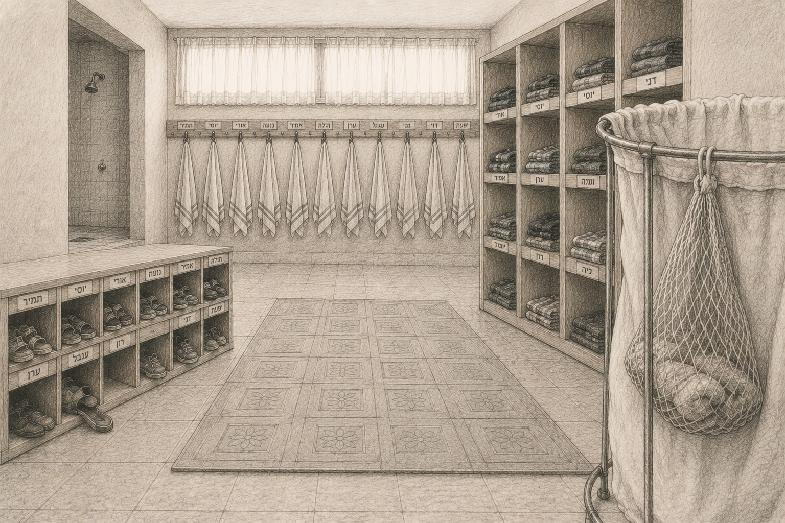

ילדה ערנית בת שבע פורשת את רגעי היום-יום של ילדותה בקיבוץ — ילדוּת שהיתה בו-זמנית של שפע ושל חֶסֶר. סיפור פרטי שהוא גם דיוקן של עולם שחלף מן העולם.

חזרה אל הבֶּיתֶלָדִים
בתמימות ילדית נחשפים יופיו ומורכבותו של בית גידול שחלף מן העולם: מרחב החיים של החינוך המשותף, צורת גידול גדושה באהבה ודאגה, הטומנת בחובה גם זרעי פורענות. ‘עיניים גדולות זה לא טוב’ הוא רומן צלול ומרגש, פוקח עיניים וצובט בכנותו.
קראו עוד על הספר ←
רונית בלנרו-אדיב
פסיכולוגית קלינית עם התמחות בטיפול בילדים. נולדה, גדלה והתחנכה בשנות השבעים בקיבוץ של השומר הצעיר. ‘עיניים גדולות זה לא טוב’ הוא ספרה הראשון.
הכירו את רונית ←בואו נחזור לבֶּיתֶלָדִים
אחת לשלושה שבועות נפגש בזום ונעלה את אחד הטקסים שכולנו מכירים - ההתעוררות בבוקר, המקלחות, הארוחות, הלילה ועוד רבים אחרים. נחזור אל הריצה ברגליים יחפות, אל החיבוק לאבא או לאמא שהלכו בסוף ההשכבה, אל רותק׳ה שמדדה לנו חום בחדר האיזולציה. נחזור אל הרגעים הקטנים שעיצבו אותנו, וננסה להתבונן מחדש בילדות שלנו, מתוך הפרספקטיבה שיש לנו היום כמבוגרים.
המפגשים פתוחים לנו, הילדים, לכם - הורינו, ולכל מי שהסיפור הזה נוגע בו.
להמשיך לקרוא...
ספר שמחזיר אותך אל בית הילדים — אל הריח, אל החושך ואל הגעגוע.
מתוך מכתב של קוראת
עדות נדירה ומרגשת לילדוּת הקיבוצית, כתובה ביושר נדיר.
מתוך מכתב של קורא